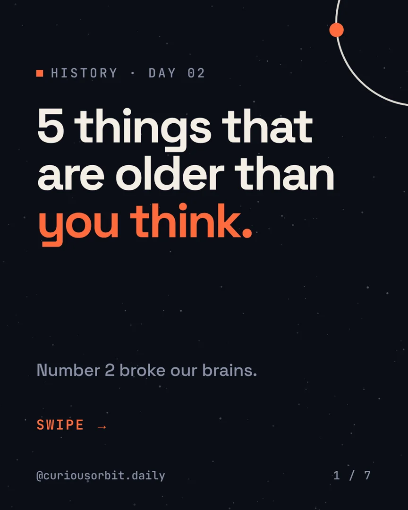
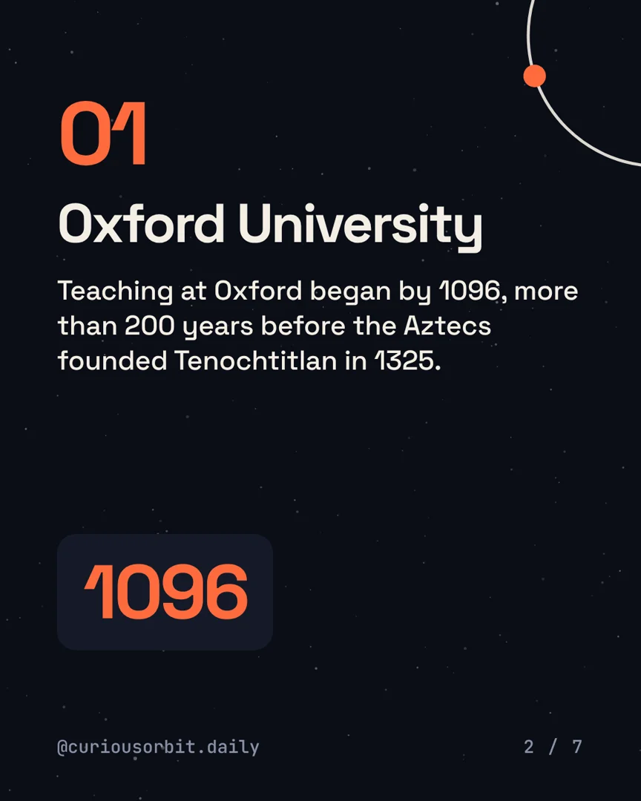
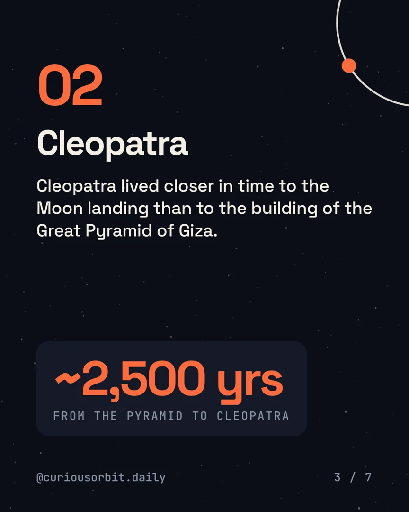
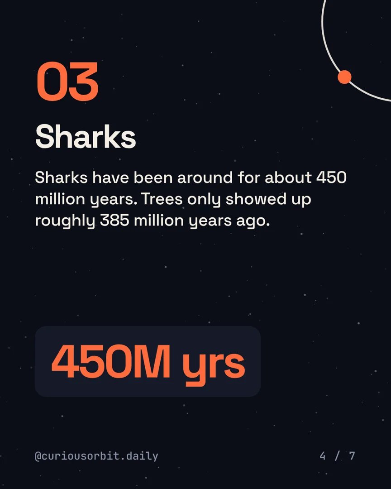
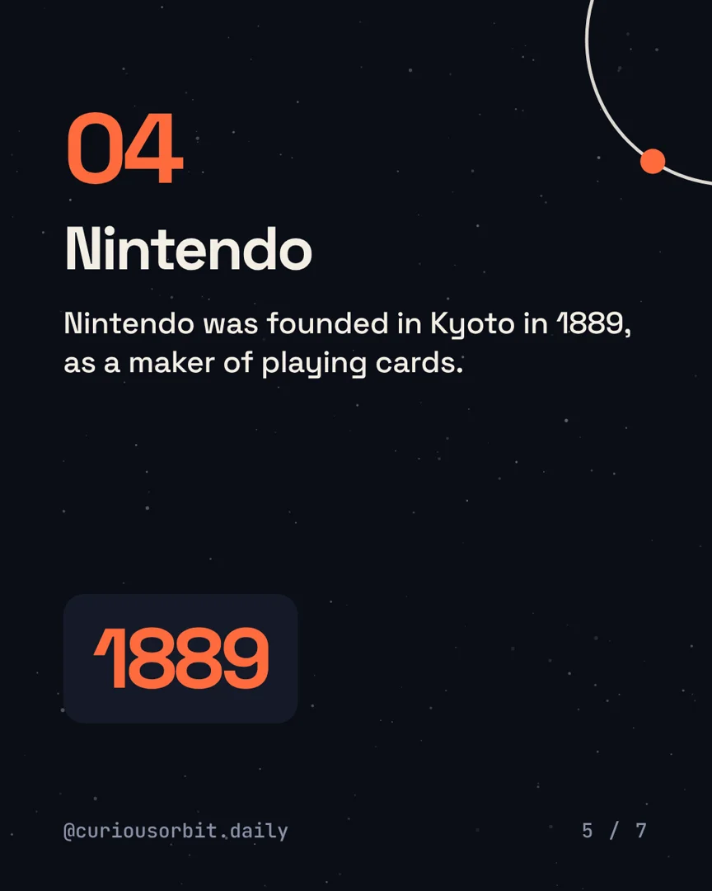
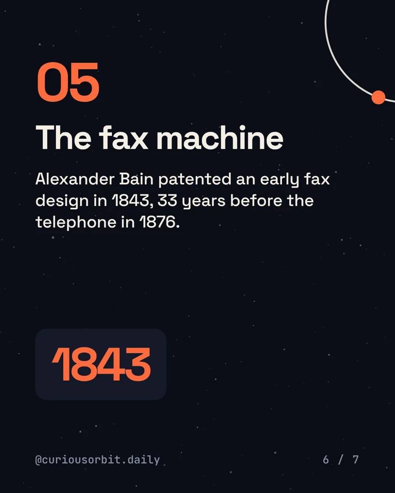
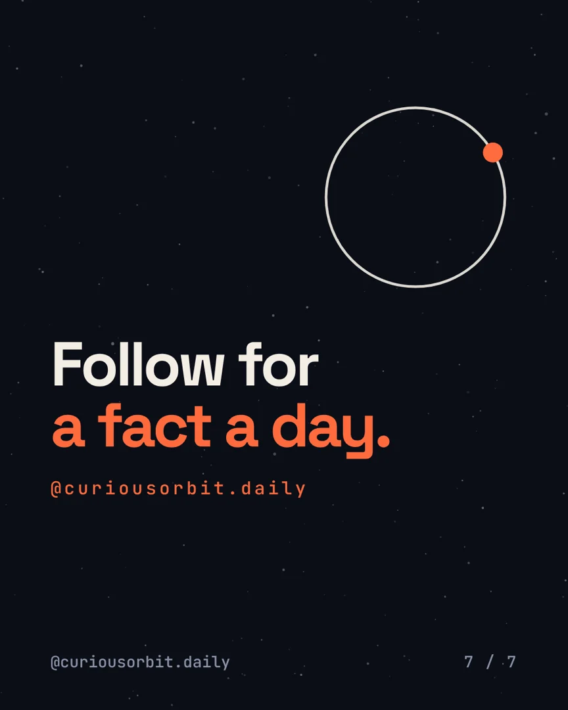

History · Day 02 · carousel
5 things that are older than you think.
History is weirder than the timeline in your head. Which one surprised you most? Tell us below
Save this for your next trivia night.
Day 02 · carousel
This fact drops Wed 7 Oct, 1 pm.
No spoilers. Get it in your inbox the morning after, or follow along on Instagram.